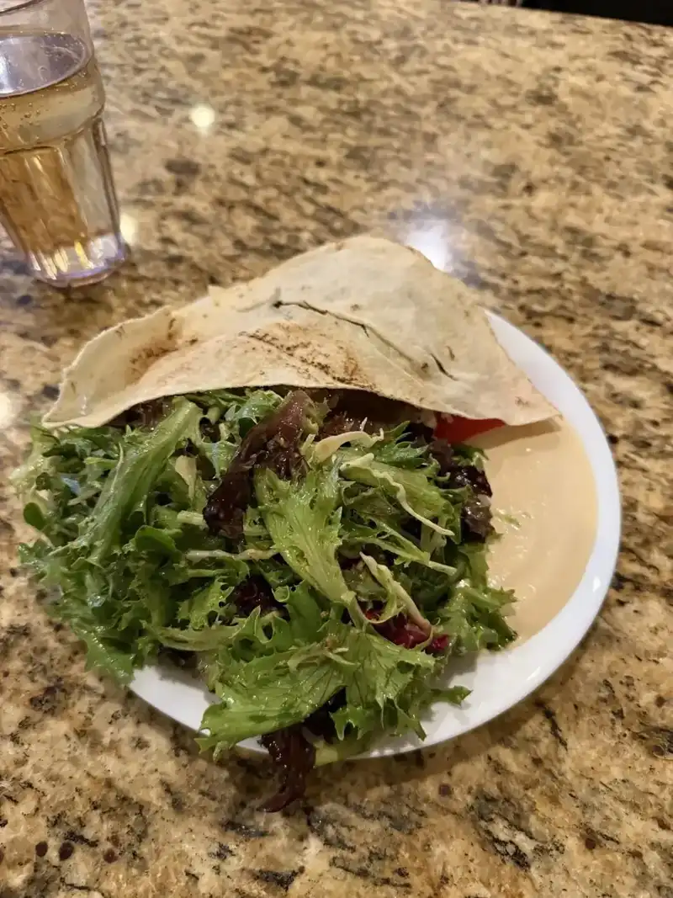
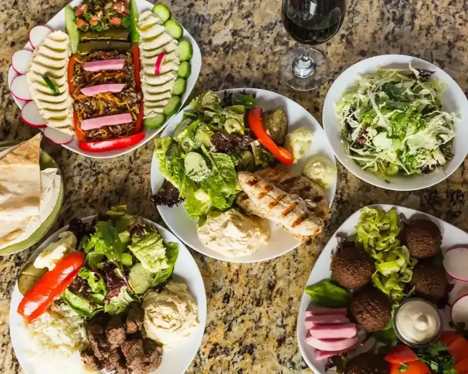
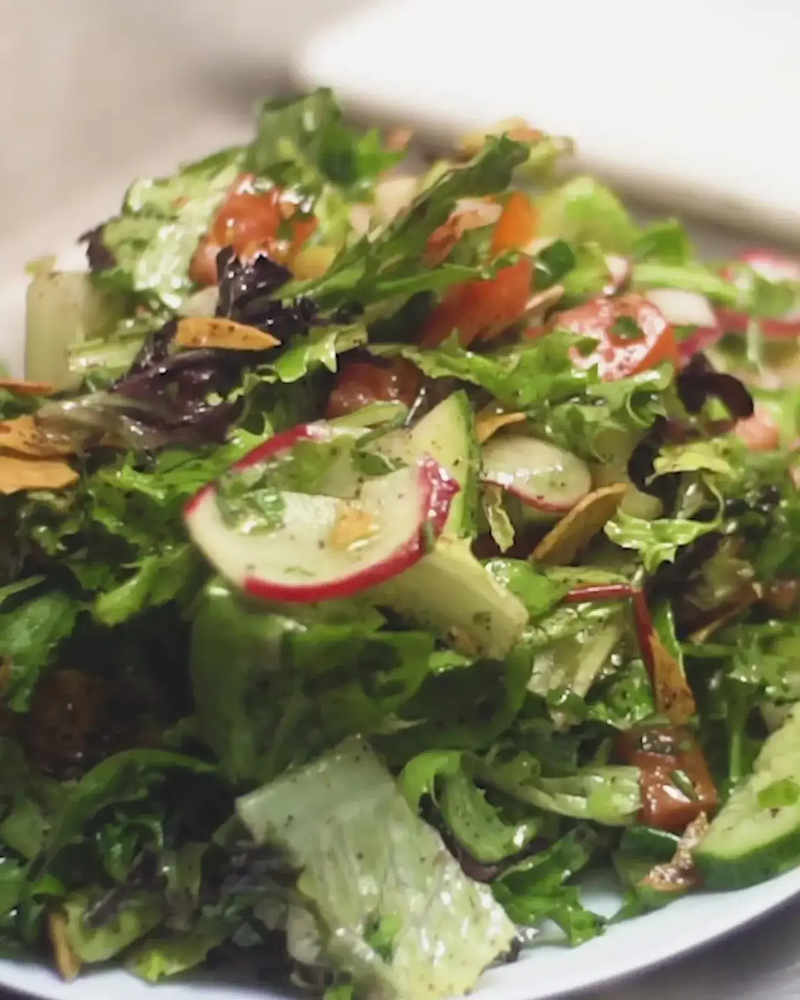
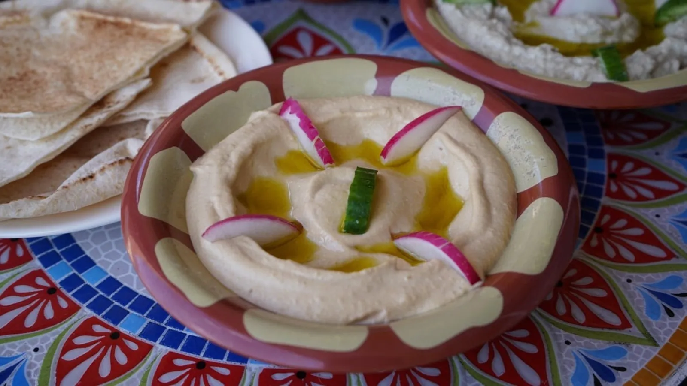
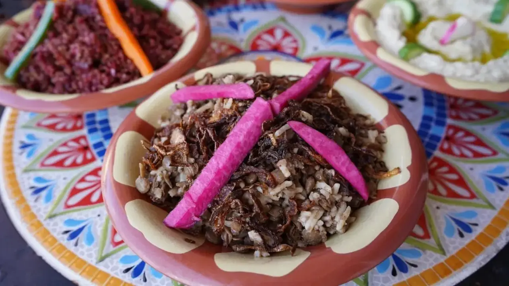
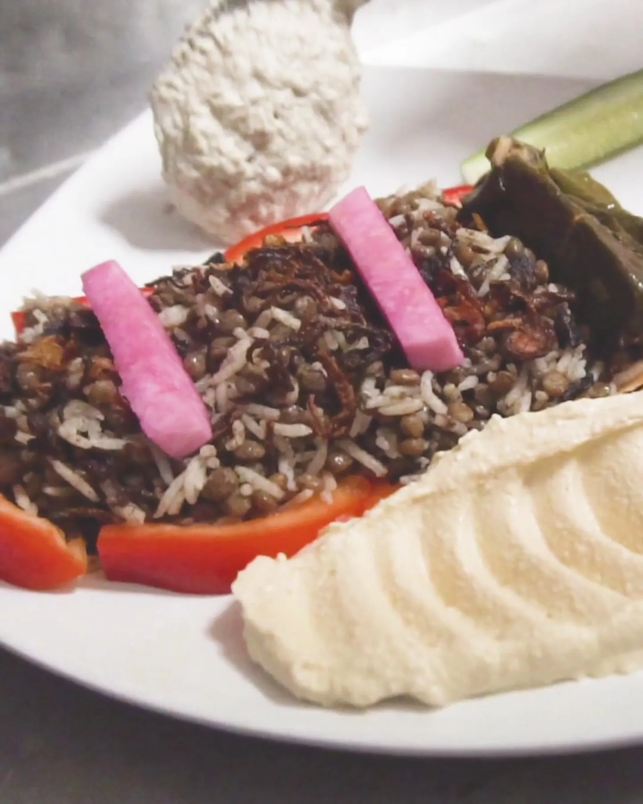

Shawarma, kefta and gyro
Chicken shawarma, lamb kefta and gyro, each with the large side salad, hummus and pita guests love.
Lebanese restaurant · Tampa, FL
Shawarma, kefta and gyro cooked fresh to order, with a big side salad, hummus and pita, from a family that has served Tampa since 2012.
What guests order
Fresh to order, in the style of Jbeil, Lebanon.
Chicken shawarma, lamb kefta and gyro, each with the large side salad, hummus and pita guests love.

A beef shawarma wrap, a chopped salad with gyro and greens piled on warm pita.

Falafel with radish, tomato and tahini on a shared plate, with hummus and warm pita alongside.





4.7 ★ · 615 Google reviews
I have been here twice now and the food has been fantastic both times! I’ve tried both the chicken shawarma and lamb kefta. Both were incredible. I love the large side salad, humus, and pita that come with the entrees. It makes for a filling, but healthy meal. I highly recommend checking this place out!
The best place for authentic Mediterranean food! Everything is cooked fresh to order, and the flavors are absolutely amazing and unique. They also have delicious desserts and great adult drinks. It’s a wonderful family-owned restaurant, and the owner personally comes by to check on you, which makes the experience even more special. Truly outstanding service and food. Come experience it for yourself!
Best food in Odessa. I love everything on the menu. The service is friendly, the portions are huge, the flavors are amazing. This is my go to place when I’m looking to have healthy and flavorful! The lemonade is so unique. You’re can’t go wrong with Fresh Bites.

Our story
Fresh Bites was founded in 2012 by Samir and Anissa Khalife, who wanted to give their community healthy, organic and authentic meals. Every day the couple and their four children run the restaurant, and the cooking aims for the same authenticity and flavor as in their hometown of Jbeil, Lebanon.
Produce is non-GMO, organic and local whenever possible. Meats are always antibiotic and hormone free, and the fish is wild caught. Guests mention fresh-to-order plates, huge portions and an owner who comes by the table to check on you.
Drop in
11665 Countryway Blvd, Tampa, FL 33626
We are closed Sunday and Monday. Tuesday to Thursday we open at 4:30 PM, and Friday and Saturday at 11:30 AM.